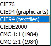
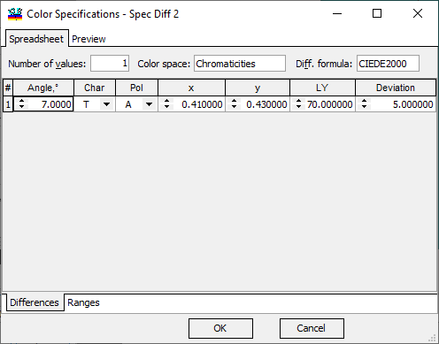
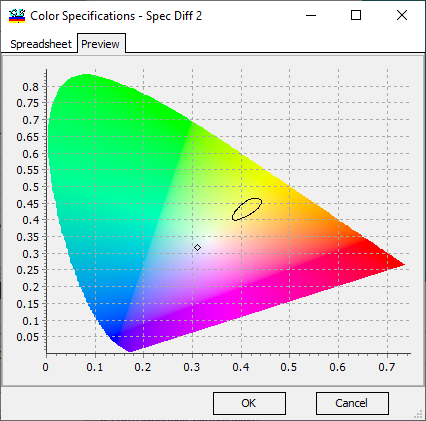
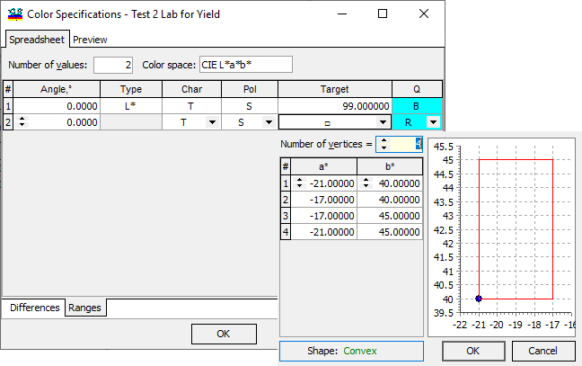

Color Specifications
Color Specifications
Navigation: OptiLayer Menu Commands > Data Menu >
Color Specifications
` <integral_specifications.html>`__ ` <idh_menu_data.html>`__ ` <idh_edit_light_source.html>`__
Color Specifications are important for ensuring that coatings meet formal technical specifications, which may differ from the targets set for efficient design problem solutions. These specifications are displayed in the Color Evaluation window and are also used in Error Yield Analysis. There are two methods for entering Color Specifications:
Color Differences: This method involves specifying the acceptable difference between the target color and the actual color of the coating using mathematical formulas or metrics.
Color Ranges: This method involves defining acceptable ranges for color values, providing a range within which the color of the coating should fall to meet specifications.
The Color Differences method relies on specific formulas to evaluate color variations between the target color and the actual color of the coating:

For instance, a specification can be set for the maximum color difference based on the CIEDE2000 formula in the Chromaticities color space with reference to the central point having coordinates x=0.41, y=0.43, Ly=70 for Ta at a 7-degree angle of incidence using the following configuration:

The Preview feature assists in visualizing the current color specification.

The Color Ranges method involves representing specifications as polygons in a chosen color space, making it similar to Color Range Targets.

In this figure, we have defined a range using L*a*b* color space coordinates for Ts at normal incidence.